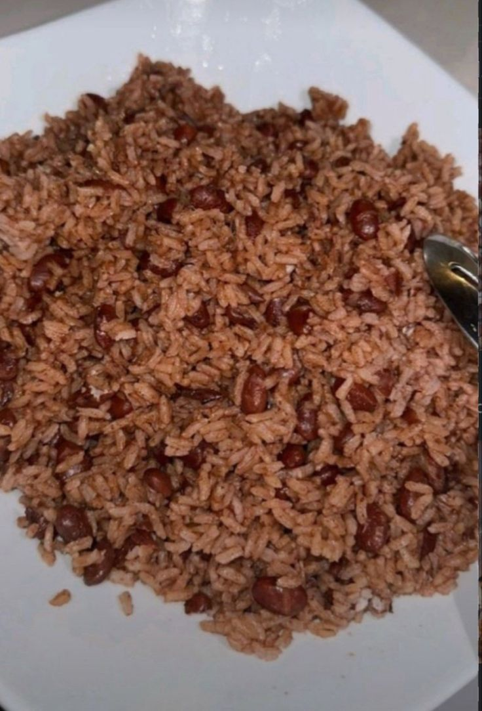
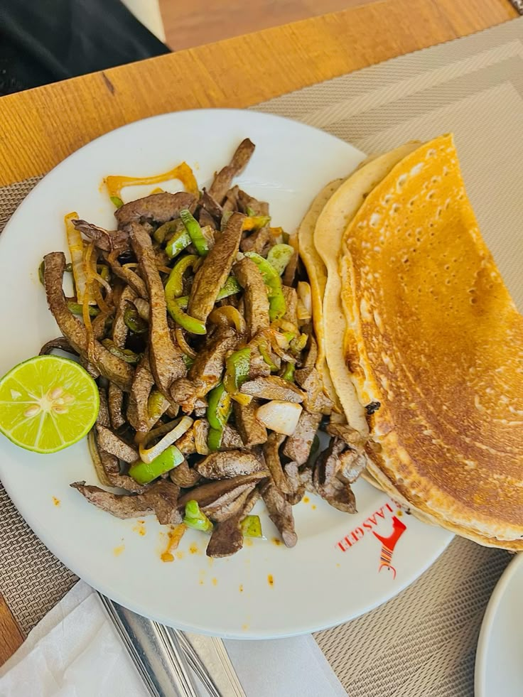

service waxa ka helasaa cunto dhaqameed kuwaas aan u diyaarin dalxiisayasha, kuwaas dalkeena caan ku yahay

cambuulo waa cuntada aanu dhaqanka uleedahay taasi oo si joogta lagu isticmaalo guri kasta dhadhane leh iyo cafimaad

kaliya mahan cunto dhaqameed sidoo kle wa bilaawga subaxdeena taasi oo leh dhadhan dabiici ah madama ay ka sameysanthy galey iyo beerka oo ah midka ugu caansan quracda